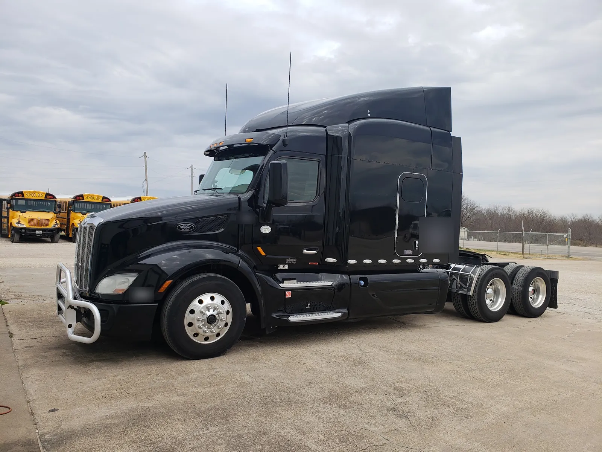

Reviews
Honest. Dependable.
What drivers, owner-operators and fleet customers say about Coleman Diesel Services on Google, quoted word for word.
4.7/5
From 84 Google reviews. Topics customers mention most:
Hopper wash outFriendly inspectorWait timeTrailers
In their words
Ten reviews. One verdict.
Reviews are shown exactly as written on Google, including spelling and capitals.
I can’t say enough good things about Jeff and Brad at Coleman Diesel Service. I came in with an emissions/aftertreatment issue that had my truck throwing codes and putting me in a bad spot. They got me in first thing this morning, diagnosed the problem, rushed the part I needed, got everything installed and checked out, and had me back on the road by 5:00 PM the same day. In this business, downtime costs money, and most shops will tell you it’ll be days before they can even look at you. Jeff and Brad understood that and did everything they could to keep me moving. They were professional, knowledgeable, straightforward, and treated my truck like getting it fixed actually mattered. I’ve honestly never had a shop work that hard to get me taken care of that quickly. The warning lights are gone, the truck is running right, and I couldn’t be happier with the service. If you’re an owner-operator or run heavy trucks and need somebody who will actually go the extra mile for you, I highly recommend Jeff and Brad. I’ll absolutely be back. Five-star service all the way.
They are the absolute best people in the world to have work on your Truck. Honest, and dependable .
Jeff and his team were a pleasure to work with. Brought our RGN trailer in for a PM and they informed us that the wheel seals on one axle were beginning to leak. They showed us what they saw and gave us a quote to fix. Their pricing was more than fair and had both seals replaced in a few hrs. Greatly appreciate their honesty and great pricing.
Had my hood bracket replaced on passenger side. Guys I 100% recommend this company to work on your equipment. A polite and professional staff. And they simply did what I expected them to do. Thanks Jeff,Carl and Chris
BEEN THERE WITH MY TRUCK & HAD WORK DONE BY COLEMANS , THEN HAD IT ALL DONE IN A TIMELY MANNER, THRN WHEN I WAS DONE FOUND OUT THEY WASH TRUCKS, ,, THEY DID FIX MY TRUCK & HAD IT RUNNING GREAT,, ONLY PLACE IM TAKING MY TRUCK FROM HEREON,,, GREAT SERVICE & GREAT WORK,
Coleman’s Diesel is a great shop for all truck repairs. Honest and priced right.
Get my trailers expect to hear it every year. The crew is very accommodating and this visit specifically, the state inspector was awesome!
Great service. These guys will go out of their way to take care of you. Great place to take your RV for an inspection or oil change too.
Chris Coleman is a really good person knows his stuff with trucks very kind.
Great fair place, gets on your equipment in a timely manner.